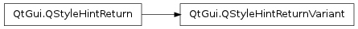

QStyleHintReturnVariant ¶

Detailed Description ¶
The PySide.QtGui.QStyleHintReturnVariant class provides style hints that return a PySide.QtCore.QVariant .
- class PySide.QtGui. QStyleHintReturnVariant ¶
-
Constructs a PySide.QtGui.QStyleHintReturnVariant . The member variables are initialized to default values.
- PySide.QtGui.QStyleHintReturnVariant. StyleOptionVersion ¶
-
This enum is used to hold information about the version of the style option, and is defined for each PySide.QtGui.QStyleHintReturn subclass.
Constant Description QStyleHintReturnVariant.Version 1 The version is used by PySide.QtGui.QStyleHintReturn subclasses to implement extensions without breaking compatibility. If you use qstyleoption_cast() , you normally do not need to check it.
See also
QStyleHintReturnVariant.StyleOptionType
- PySide.QtGui.QStyleHintReturnVariant. StyleOptionType ¶
-
This enum is used to hold information about the type of the style option, and is defined for each PySide.QtGui.QStyleHintReturn subclass.
Constant Description QStyleHintReturnVariant.Type The type of style option provided ( SH_Variant for this class). The type is used internally by PySide.QtGui.QStyleHintReturn , its subclasses, and qstyleoption_cast() to determine the type of style option. In general you do not need to worry about this unless you want to create your own PySide.QtGui.QStyleHintReturn subclass and your own styles.
See also
QStyleHintReturnVariant.StyleOptionVersion
- PySide.QtGui.QStyleHintReturnVariant. variant ¶